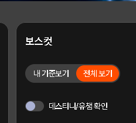
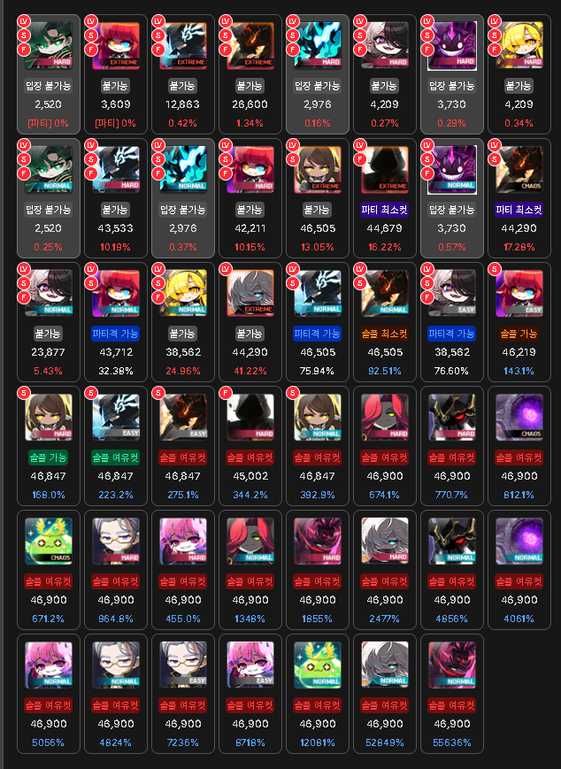

공용 환산 배율
캐릭터별 배율을 등록하고 파티에서 함께 사용하세요.
계정 설정
보스 카드 캡처를 아래에 붙여넣으세요.
- 환산 원문 설정
보스컷에서 내 기준보기를 전체 보기로 바꿉니다. 시간은 20분, 데스티니/유챔 확인은 OFF로 설정합니다.

- 보스 카드 캡처
Windows에서 Win + Shift + S를 누르고, 보스 카드의 아이콘과 난이도, 배율 숫자가 모두 보이도록 영역을 잡습니다.

- 캡처 이미지 넣기
이 화면의 캡처 입력에서 Ctrl + V로 붙여넣거나 파일 선택으로 올립니다.
Ctrl + V파일 선택 - 배율 확인 후 저장
읽어 온 값과 원문을 비교하고, 확인이 필요한 값은 보스별 배율에서 수정한 뒤 공용 배율 저장을 누릅니다.
하드 윌77%공용 배율 저장
이미지를 놓거나 Ctrl+V로 붙여넣기
보스별 배율
| 보스 | 환산 배율 | 삭제 |
|---|